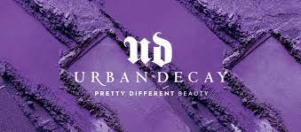
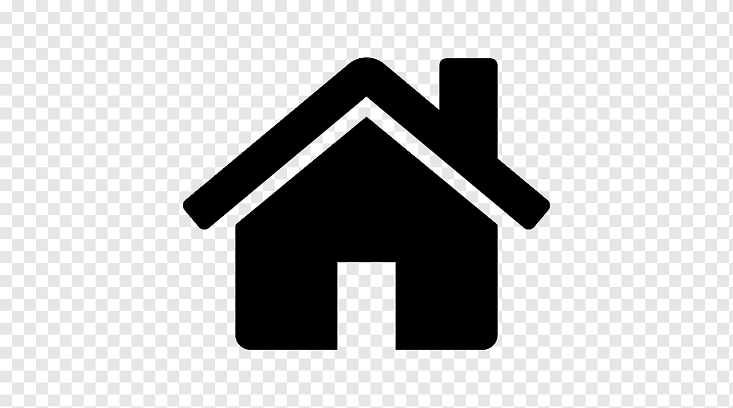
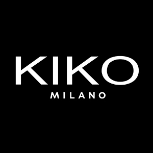

Cruelty Free
¿Qué es la marca Urban Decay?
Urban Decay, marca que en la actualidad pertenece al Grupo L'Oréal, fue una de las pioneras en defender el maquillaje de una mujer segura de sí misma que lo usa para expresarse y no solo tapar defectos. Aunque la marca de L'Oréal se diferencia de otras por sus colores vanguardistas y productos innovadores, de ultra larga duración, el producto superventas son las paletas (estuches con distintas tonalidades de sombras de ojos), aptas para cualquier tipo de consumidor.
El director financiero de la marca calculó hace dos años que cada ocho segundos se vende una paleta en el mundo; y es que entre sus clientas se encuentran celebrities con un punto atrevido como la actriz Ruby Rose (imagen de la firma), pero también son usuarias habituales Kate Middleton o Michelle Obama.
La empresa Urban decay ha confirmado que es cruelty free. Urban decay no testa en animales y por lo tanto, no prueban los productos acabados o los ingredientes en animales, ni tampoco lo hacen sus proveedores o terceras partes. Tampoco venden sus productos en lugares donde la ley exige la experimentación en animales Así que para salir de dudas, podemos asegurar que Urban decay no testa en animales.
La belleza forma parte de nuestras vidas. Una belleza vinculada a sentirse bien, a ser quien eres y a demostrarlo; y si esa belleza es conjugada con innovación responsable, mucho mejor para el individuo y para el planeta. Un terreno donde la industria de la cosmética juega un papel fundamental como generadora de ilusiones. Los primeros homínidos ya se dejaban seducir por lo que percibían a través de los ojos y el resto de los sentidos y, ahora, en pleno siglo XXI, eso se ha acentuado, si cabe, aún más. Desde hace unos meses, Urban Decay forma parte del selecto grupo de marcas de L’Oréal Luxe.
Productos más vendidos
A España también ha llegado el fenómeno paleta y el trío ganador de los productos más vendidos en nuestro país, tanto en la tienda como a través de la web, está formado por Naked2 Palette (una de sus paletas de sombras de ojos más famosa), el Eye Shadow Primer Potion (tratamiento para fijar la sombra de ojos) y la máscara de pestañas Perversion, un nombre que se convierte en toda una declaración de intenciones de la firma cosmética más atrevida del momento..
A la pregunta de si nos maquillamos mucho en España y cómo es la valoración después de un año con tienda propia, Zomnir responde: "Estamos muy satisfechos de los resultados que estamos cosechando en este local. Esto se debe al refuerzo y explosión de la categoría del maquillaje en España, que está asistiendo a crecimientos superiores al 7%. Los países mediterráneos han concebido una idea del maquillaje más natural, pero esto también está cambiando y la gente joven ha marcado una nueva línea de expresión". El 58% de las clientas que visitan su tienda en Madrid son menores de 35 años.
|  |
|
|
 |
|
|
|
|